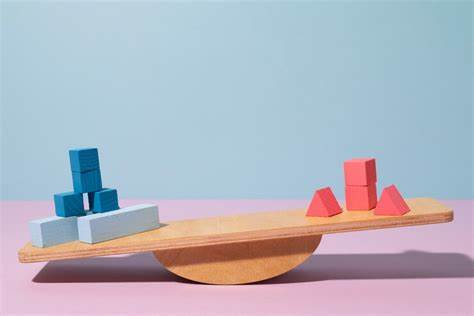

Materi Perbandingan Berbalik Nilai Kelas 7
Pendahuluan
Perbandingan berbalik nilai merupakan salah satu konsep penting dalam matematika yang sering kita jumpai dalam kehidupan sehari-hari. Konsep ini menggambarkan hubungan antara dua variabel yang saling mempengaruhi secara terbalik, di mana peningkatan pada satu variabel akan menyebabkan penurunan proporsional pada variabel lainnya.
Definisi Perbandingan Berbalik Nilai
Perbandingan berbalik nilai, juga dikenal sebagai proporsi terbalik atau inverse proportion, adalah hubungan matematis antara dua variabel di mana peningkatan satu variabel menyebabkan penurunan proporsional pada variabel lainnya, sehingga hasil kali kedua variabel tersebut selalu konstan.
Rumus Dasar Perbandingan Berbalik Nilai
Untuk menghitung perbandingan berbalik senilai, kita dapat menggunakan rumus berikut:
Konsep Contoh Aplikasi dalam Kehidupan Sehari-hari
a. Kecepatan dan Waktu Tempuh Semakin tinggi kecepatan kendaraan, semakin singkat waktu yang dibutuhkan untuk menempuh jarak tertentu.
b. Jumlah Pekerja dan Waktu Penyelesaian Semakin banyak pekerja, semakin sedikit waktu yang dibutuhkan untuk menyelesaikan suatu pekerjaan.
c. Tekanan dan Volume Gas (Hukum Boyle) Pada suhu konstan, tekanan gas berbanding terbalik dengan volumenya.
d. Intensitas Cahaya dan Jarak dari Sumber Intensitas cahaya berbanding terbalik dengan kuadrat jarak dari sumbernya.
e. Tegangan dan Arus Listrik (pada resistansi konstan) Berdasarkan Hukum Ohm, jika resistansi tetap, peningkatan tegangan akan menyebabkan penurunan arus listrik secara proporsional.
Modul Ajar
Untuk memahami materi tentang Perbandingan Berbalik Nilai secara lebih mendalam, mari kita simak modul ajar yang telah disiapkan di bawah ini. Modul ini akan membantu Anda memahami konsep-konsep penting dan memberikan panduan yang jelas untuk setiap bagian materi. Berikut adalah Modul Ajar mengenai materi Perbandingan Berbalik Nilai:
Video Pembelajaran
Untuk membantu memperdalam pemahaman Anda tentang materi Perbandingan Berbalik Nilai, saya telah menyiapkan video pembelajaran yang akan menjelaskan konsep-konsep penting secara lebih detail. Silakan tonton video di bawah ini, dan jangan ragu untuk mengulangi atau menjeda video jika diperlukan agar Anda dapat memahami setiap bagian dengan lebih baik. Berikut adalah video pembelajaran mengenai materi perbandingan berbalik nilai:
Kesimpulan
Perbandingan berbalik nilai merupakan konsep matematika yang fundamental dengan aplikasi luas dalam kehidupan sehari-hari dan berbagai bidang ilmu. Pemahaman yang baik tentang konsep ini dapat meningkatkan kemampuan analitis dan pemecahan masalah.